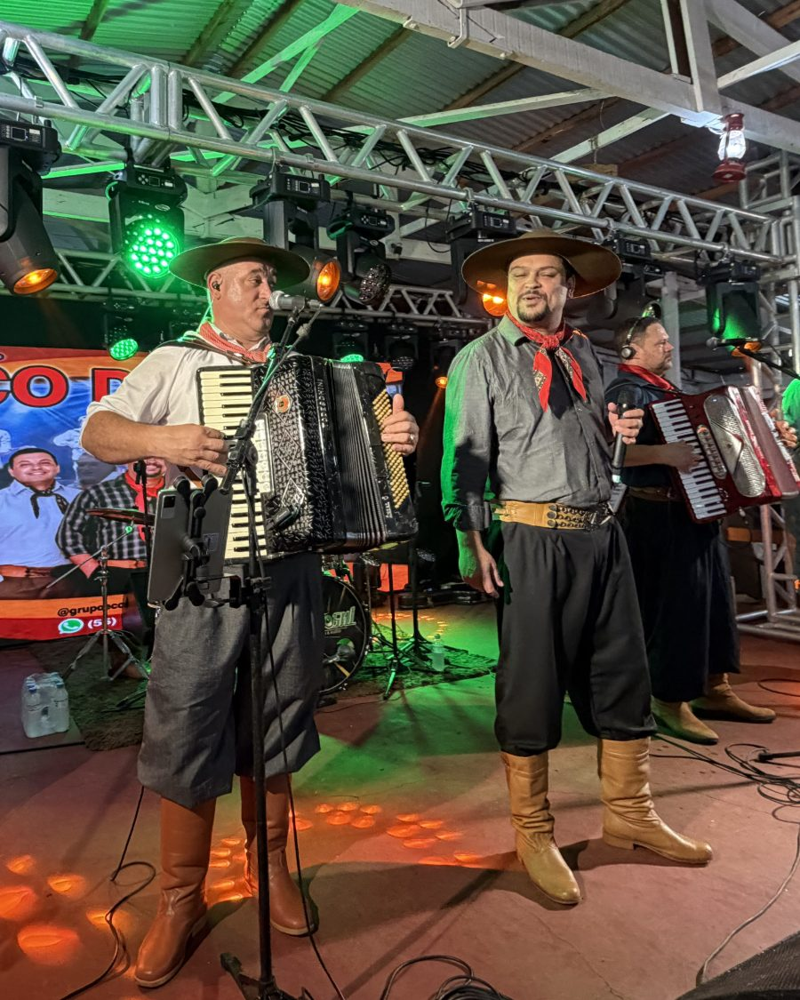
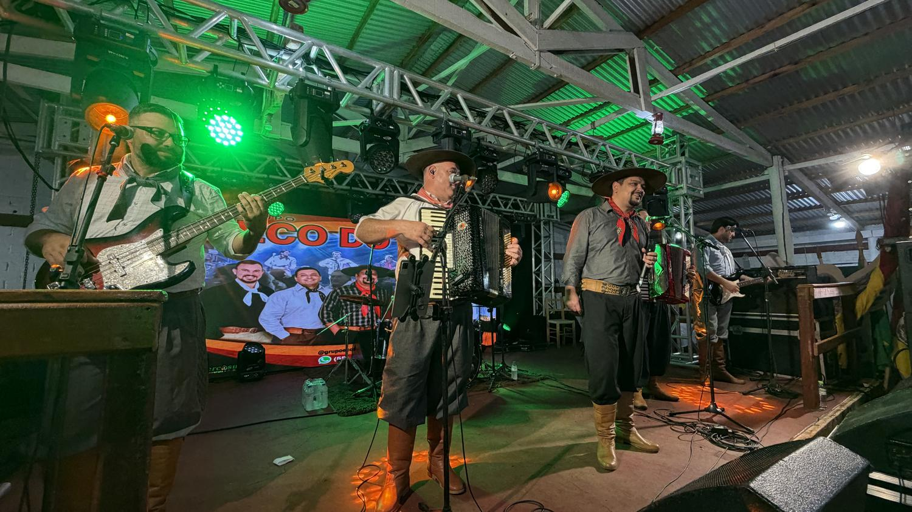
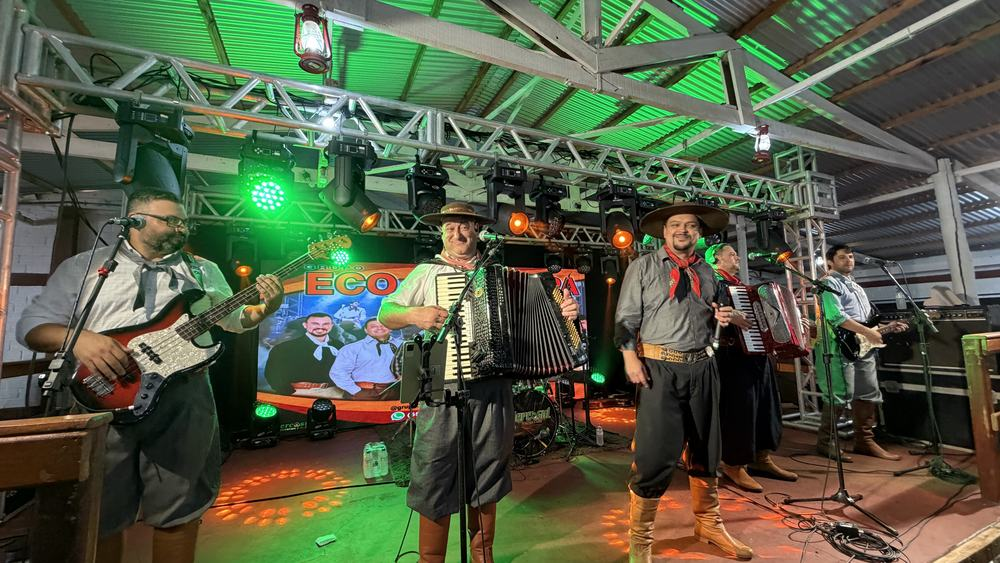

Agenda aberta
Música gaúcha de baile, tocada ao vivo. Gaita, baixo, guitarra e bateria para encher a pista em bailes, festas e eventos nas Missões e região.
O grupo
Baile de verdade, do jeito que a gente sabe fazer
O Eco do Pampa das Missões é um grupo de música gaúcha nascido no coração das Missões, no Rio Grande do Sul. Gaita, baixo, guitarra, bateria e voz, pilcha no corpo e repertório pensado para uma coisa só: não deixar a pista vazia.
São os clássicos que todo mundo canta junto, o que está tocando agora e as nossas próprias músicas no meio. A primeira delas já está gravada no nosso primeiro CD.
Tocamos em bailes, festas de CTG, aniversários, casamentos e eventos em toda a região.
- 01
Ao vivo, sempre
Grupo completo tocando de verdade. Nada de playback.
- 02
Missões e região
Base nas Missões, RS. Atendemos toda a região.
- 03
Agenda aberta
Bailes, festas de CTG, casamentos e eventos.

Ouça e assista
O grupo tocando

Fotos
Do palco
Contratar
Leve o Eco do Pampa das Missões para o seu evento
Chame no WhatsApp com a data e o local do evento que a gente retorna com tudo certinho.
Chamar no WhatsApp